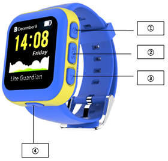

PT-720 Kids Smart Tracker Watch
Cover

① Switch button: press the switch button a longer time to power on& power off.
②SOS button: press the SOS button a longer time to activate SOS to call for help and send alert message to preset emergency contacts automatically.
③Page cycling button.
④Confirm button.
Connecting the device with APP
1. Please take off the screw on the rear cover to insert a standard Nano SIM card.After correct installation, press the switch a longer time.The device will turn off automatically if not install SIM card in one minute after power on.
2. Start APP: Lite Guardian.
3. Please register new account or login existing account,choose "watch device".
4. After input SIM No.,click confirmation button,then you can send confirmation message to the watch,after successful operation,QR code can display on the watch.
5. Scan the QR code to bundle the watch.
6. After bundling, click on the "confirm" button of watch, exit the QR code interface.
Functions and instruction
Watch time correction method: please choose your local time zone in the "Time Zone Setting" interface on APP.
Sport record: click power on&off button in the main interfaceto check kids' daily activity.
SOS : click SOS buttonin the main interface to enter SOS interface,then press the button a longer time to directly dial call to the preset emergency contact and send alert message to the before 3 contacts in the phone book for help.
Press "page cycling" buttonin the main interface，after switch, it can enter the different feature.
Telephone book: add contacts via APP,after saving, telephone book will automatically updated.
Phone call: enter telephone book,click "page cycling" to choose contacts, click "confirm" button, then can make phone calls, hang up the phone after clicking power on&off button.
Language setting: in the language feature, click "page cycling" select the language, then click on the "confirm" button to save.
Setting the APN
Please set the APN firstly,or it may be unable to get positioning data.
How to set APN: APP Setting APN Setting Fill in APN (based on SIM card provider'sAPN parameter)
Notes: Ensure the device stays online and under a stable network connection before setting APN.
Charging instruction
Please use the special charger cable,the device support Apple etc popular cell phone charger, and forenvironmental protection consideration, we don't provide chargerwith device . Please select a suitable on your hand for charging.
Accessories
1.Charger cable
2.User manual
3.Screwdriver
FAQ
1.Why can't I power on the device?
The battery on your device could be running low during long-time transportation,please plug in the charger and try again.
2.Why can not charge?
Please confirm whether the charger is contacted with device.
3.Fail to scan QR code
Please adjust distance between camera and QR code; or try again in a better place with enough light.
Cautions
1.Please do not immerse the device in water.
2.Pleasedo not incinerate or dispose of in fire or expose to high temperature.
Customer service
Please contact Local Retailer or our After-sales Service Center
Contact information
Welcome to contact with us if you have any queries and recommends.
Overseas
E-mail:sales@castelbds.com
Website:www.lite-guardian.com
Service Tel.:+8675586018742
Hong kong
Service Tel.:+852-26273380
Email:cs-liteguardian@castelbeidou.com
China
Service QQ:3106893070
Service Tel.:0755-8601 8738